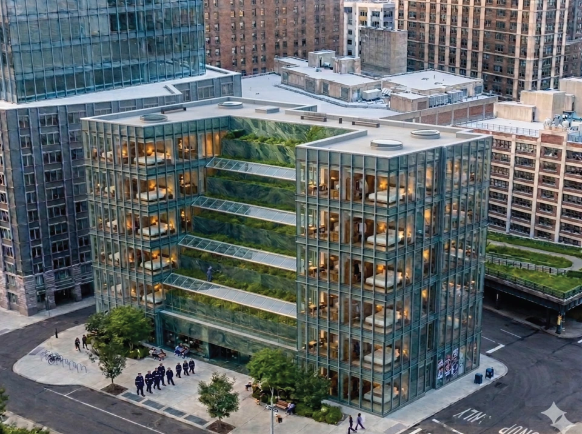
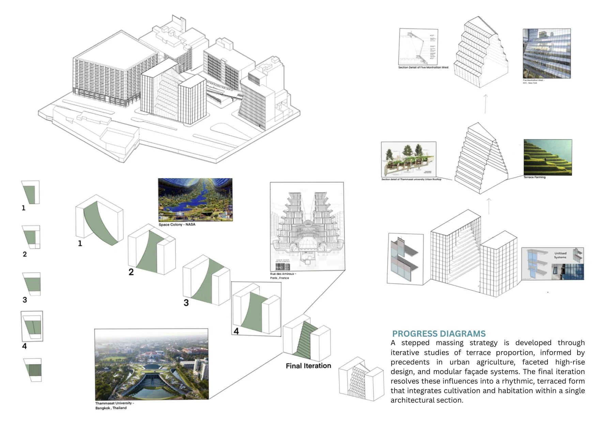
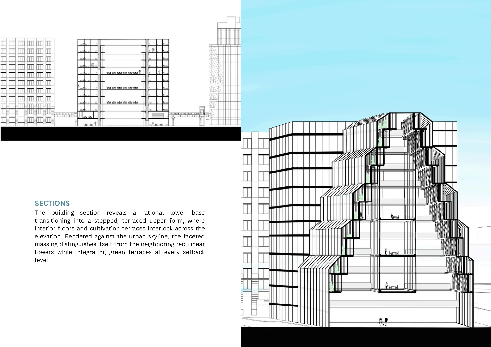
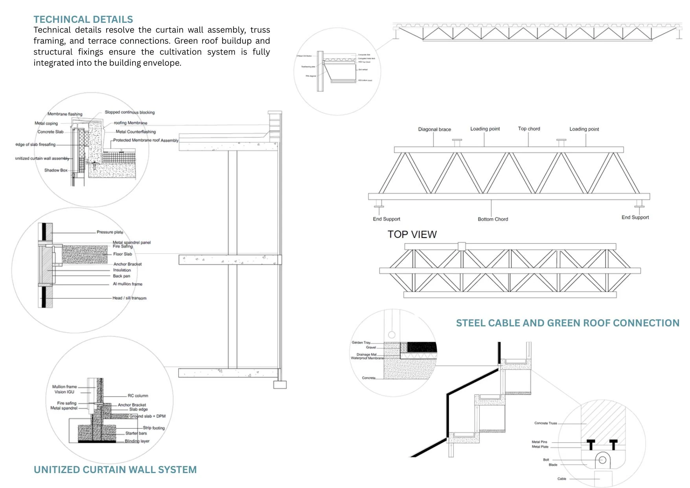
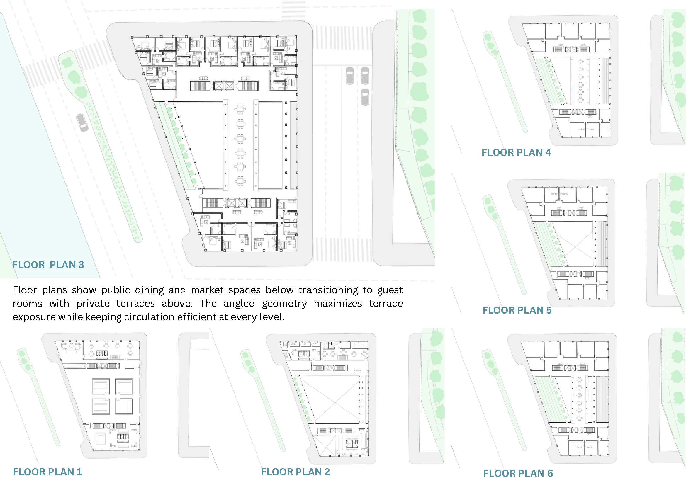
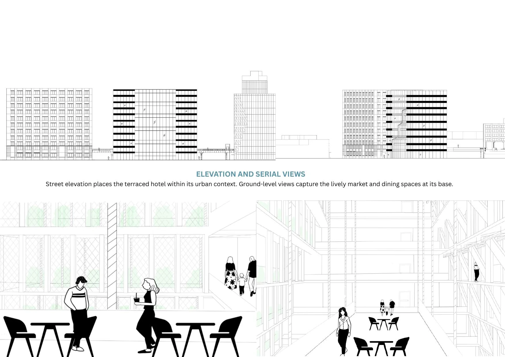

01 / ARCH 396 · Hospitality + urban agriculture
The Terra
Hotel

Project statement
The Terra Hotel is a terrace-farming hotel that merges architecture with active food production. Guests do not simply stay at the property—they experience a working farm-to-table ecosystem.

Cultivation and habitation
within a single section.
A stepped massing strategy is developed through iterative studies of terrace proportion, urban agriculture, faceted high-rise design, and modular façade systems.



